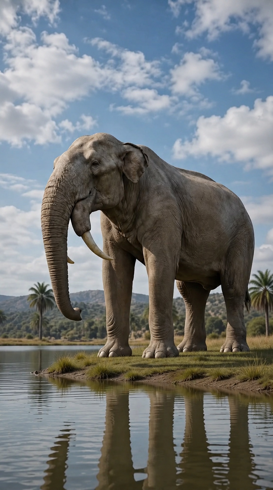
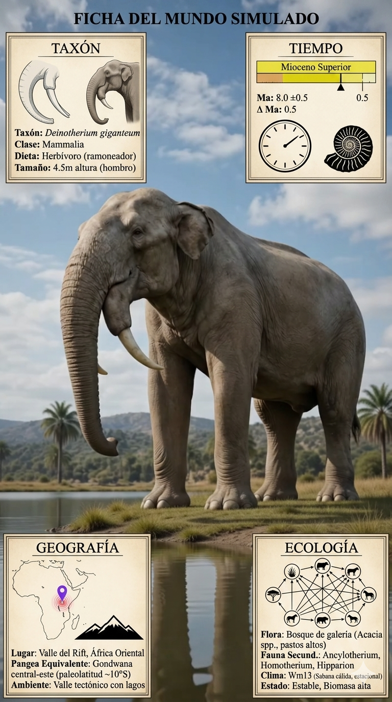

Paleoficha de Deinotherium


Periodo: Mioceno Superior – Plioceno
Edad: Hace aproximadamente entre 8 y 3 millones de años.
Dieta: Herbívoro ramoneador especializado en follaje arbóreo.
Distribución: Paleoislas del Egeo y Europa oriental.
TAXÓN:
Deinotherium giganteum
CLADO: Deinotheriidae (orden Proboscidea)
DIETA: Herbívoro ramoneador (especialista en follaje arbóreo)
TAMAÑO: Hasta 4 metros de altura a la cruz; peso estimado de 10–12 toneladas
LOCOMOCIÓN: Cuadrúpedo masivo con extremidades columnares.
TIEMPO:
Mioceno Superior – Plioceno, aproximadamente entre 8 y 3 millones de años.
GEOGRAFÍA:
Paleoislas del Egeo y Europa oriental. Zonas de transición entre bosques y sabanas mediterráneas. Ambiente paleoecológico de bosques abiertos con abundantes árboles de gran porte.
ECOLOGÍA:
Bosques caducifolios, matorrales arborescentes y áreas abiertas con gramíneas. Compartía el ecosistema con hipariones, machairodontinos y otros proboscídeos como Anancus. Ocupaba el nicho de megaherbívoro de altura, utilizando sus característicos colmillos inferiores curvados hacia abajo para arrancar corteza y ramas. Actuaba como regulador de la estructura forestal.
CLIMA:
Wm13 (Sabana cálida). Temperaturas templadas a cálidas con una marcada estacionalidad en la humedad.
ESTADO ECOLÓGICO:
Estable. Representa un linaje altamente especializado de proboscídeos con una anatomía mandibular y dental única adaptada al ramoneo arbóreo.
Vídeo PalEntropía:
▶ Ver Short en YouTube